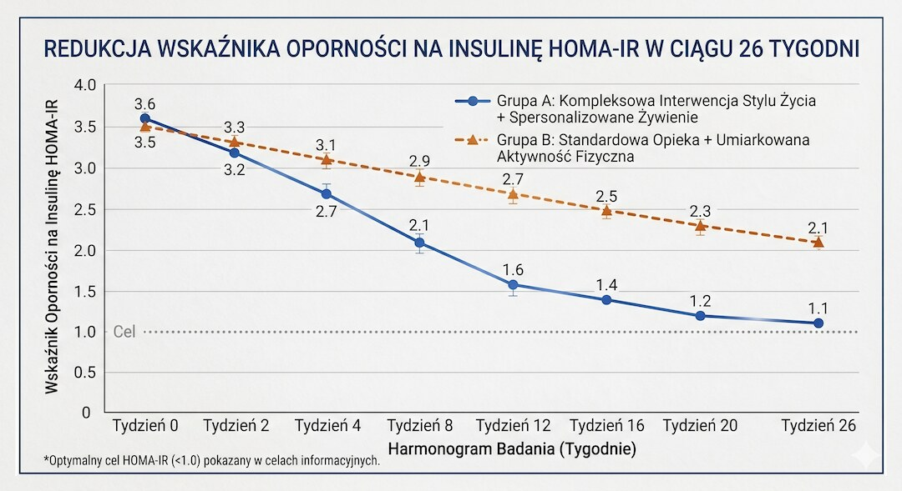
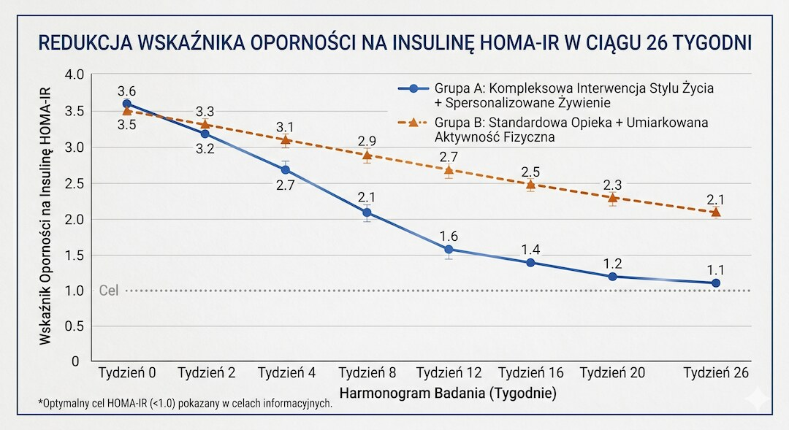
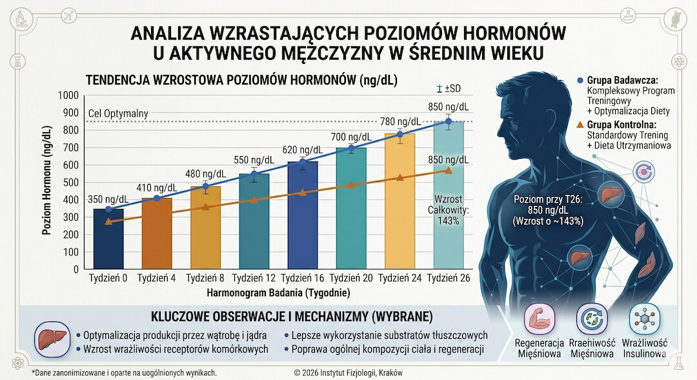
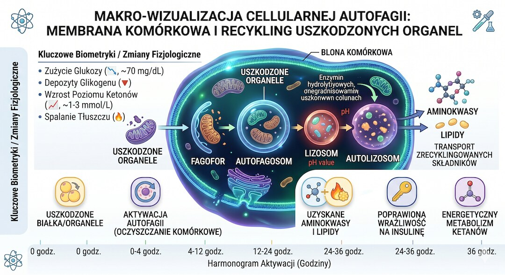
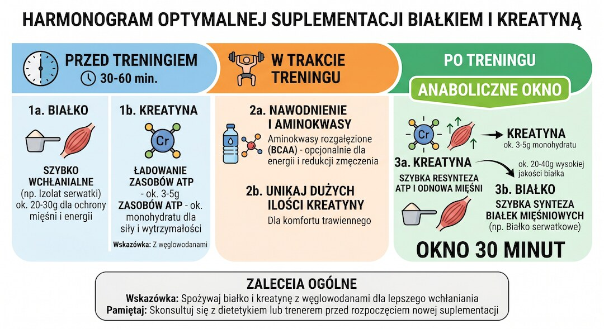
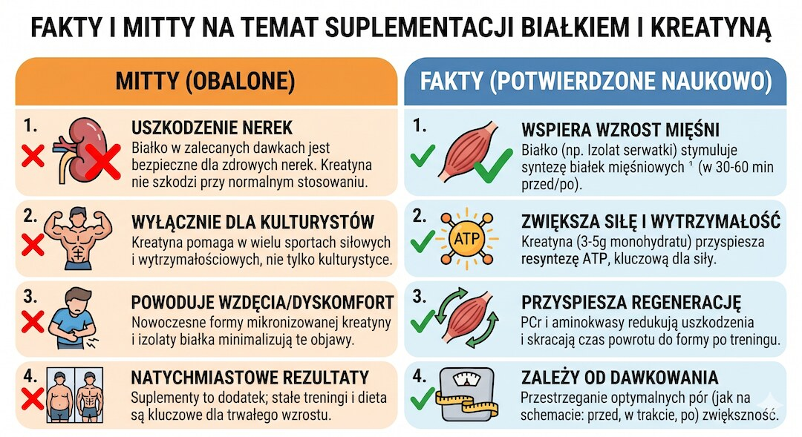

Twoje mięśnie zaczynają znikać już po pięćdziesiątce – po cichu, bez bólu, bez alarmów, po 1–2% rocznie. Nie czujesz tego przez pierwsze lata. Dopiero pewnego ranka wchodzisz po schodach i łapiesz się myśli: kiedyś to szło łatwiej. Dobra wiadomość: kreatyna i odpowiednia ilość białka to dwa z najlepiej przebadanych narzędzi, które ten proces realnie spowalniają. Zła wiadomość: większość ludzi po pięćdziesiątce bierze ich za mało, w złym czasie i w złej kombinacji. Sprawdziłem co mówi nauka z lat 2024–2025 – i mam dla ciebie konkretny protokół.
Szybka odpowiedź
Po 50-tce najlepiej łączyć 3-5 g kreatyny monohydratu dziennie z 1,2-1,6 g białka na kilogram masy ciała, rozłożonego na 3-4 posiłki po 35-40 g. Najpraktyczniejszy protokół to kreatyna i porcja białka po treningu oraz konsekwencja każdego dnia, bez fazy ładowania.
Kluczowe wnioski
- Po 50-tce tracisz 1–2% masy mięśniowej rocznie i 1,5–5% siły – to nie mit, to dane WHO. Kreatyna monohydrat + trening oporowy to jedna z niewielu interwencji, które to spowalniają.
- Twoje mięśnie po 50-tce potrzebują dwukrotnie więcej białka w jednym posiłku niż mięśnie 25-latka – minimum 35–40 g na porcję, nie 20 g.
- Dawka kreatyny: 3–5 g dziennie, bez fazy ładowania. Najlepsza forma: monohydrat. Najlepszy czas: po treningu, razem z posiłkiem białkowo-węglowodanowym.
- Kreatyna + białko + trening oporowy dają efekt synergiczny – wszystkie trzy razem budują więcej mięśni niż suma każdego z osobna.
Dlaczego po 50-tce mięśnie znikają szybciej, niż myślisz?
Po 50. roku życia utrata mięśni przestaje być teorią, a staje się biologią dnia codziennego. Dane cytowane przez WHO pokazują spadek masy mięśniowej o 1-2% rocznie i siły nawet o 1,5-5% rocznie. Bez treningu i odpowiedniego białka ten proces przyspiesza szybciej, niż większość osób zauważa.
Ten proces ma swoją nazwę: sarkopenia. To nie jest choroba seniorów – zaczyna się między 40 a 50 rokiem życia, ale przyspiesza dramatycznie po pięćdziesiątce. WHO szacuje, że sarkopenia zwiększa ryzyko upadku u dorosłych powyżej 65 roku życia o 40 procent. Koszty opieki zdrowotnej związane z sarkopeniją stanowią 12–18 procent wszystkich kosztów chorób przewlekłych w geriatrii. To nie jest problem estetyczny – to problem funkcjonalny i ekonomiczny na skalę społeczną.
Co powoduje sarkopenie? Trzy główne mechanizmy. Po pierwsze, obniżający się poziom hormonów anabolicznych – testosteronu, HGH, IGF-1. Po drugie, zjawisko zwane opornością anaboliczną: twoje starzejące się mięśnie po prostu gorzej odpowiadają na sygnały budulcowe – zarówno te z treningu, jak i z białka. Po trzecie, niedostateczna podaż białka i kreatyny w diecie, które są surowcami dla syntezy mięśniowej. I to trzecie ogniwo jest tym, nad którym masz największą kontrolę – tu właśnie wchodzi kreatyna i białko jako duo najlepiej przebadanych interwencji żywieniowych dla aktywnych po pięćdziesiątce. Więcej o bezpiecznym starcie przeczytasz w artykule jak zacząć na siłowni po 50.

Czym jest kreatyna i jak naprawdę działa po pięćdziesiątce?
Kreatyna to nie jest cudowny suplementsprzedawany obok białkowych batoników z wizerunkiem kulturysty. To związek chemiczny produkowany naturalnie w twoim organizmie – głównie w wątrobie i nerkach – z aminokwasów argininy, glicyny i metioniny. Twoje ciało produkuje około 1–2 gramów kreatyny dziennie. Dodatkowe 1–2 gramy przyjmujesz z jedzenia – głównie z czerwonego mięsa i ryb. Reszta, potrzebna do treningu o średniej lub wysokiej intensywności, może być dostarczona suplementem.
Jak kreatyna działa mechanicznie? Przechowywana w mięśniach jako fosfokreatyna, służy do błyskawicznej regeneracji ATP – głównej waluty energetycznej komórki – podczas krótkich, intensywnych wysiłków. Ale to nie jedyny mechanizm działania. Kreatyna zwiększa uwodnienie komórek mięśniowych, co samo w sobie jest sygnałem anabolicznym. Aktywuje szlaki sygnalizacyjne związane z syntezą białek mięśniowych (mTOR). Może zmniejszać rozpad białek mięśniowych. I – co szczególnie interesujące dla osób po pięćdziesiątce – wspiera funkcję mitochondriów w starzejących się komórkach.
Co mówią badania w kontekście osób powyżej 55 roku życia? Najnowsza metaanaliza opublikowana na łamach PMC (2025, przeszukiwanie baz danych do sierpnia 2024, 20 badań RCT, łącznie 1093 uczestników, 69% kobiet) potwierdziła, że kreatyna monohydrat w kombinacji z treningiem – zarówno oporowym, jak i aerobowym – istotnie poprawia skład ciała i wydolność fizyczną u starszych dorosłych. Wcześniejsza metaanaliza Chilibecka i współpracowników, obejmująca 22 badania RCT z udziałem 721 uczestników, wykazała wzrost beztłuszczowej masy ciała o 1,37 kg w grupie kreatyna plus trening oporowy w porównaniu do samego treningu. Brzmi skromnie? Przy sarkopenii, gdzie tracisz 1–2% mięśni rocznie, utrzymanie i dodanie 1,37 kg masy mięśniowej to realna różnica w jakości życia.
Osobna metaanaliza opublikowana w Journal of Parenteral and Enteral Nutrition w 2024 roku, obejmująca 33 badania RCT z udziałem 1076 uczestników, wykazała, że kreatyna poprawia wyniki testu wstawania z krzesła (sit-to-stand test), funkcję mięśni i beztłuszczową masę ciała u starszych dorosłych i pacjentów z chorobami przewlekłymi. Test wstawania z krzesła nie jest akademickim wskaźnikiem – to bezpośredni marker funkcji kończyn dolnych i ryzyka upadków. Jeśli chcesz zobaczyć, gdzie suplement ma sens, a gdzie nie, zajrzyj też do przewodnika suplementacja po 50.

Ile białka naprawdę potrzebujesz po 50-tce?
Tu zaczyna się pierwsza niespodzianka dla większości osób, które uważają, że jedzą wystarczająco dużo białka. Aktualne polskie i europejskie normy żywienia podają RDA na poziomie 0,8–0,9 g białka na kilogram masy ciała dziennie dla dorosłych. To jest norma minimalna – ilość potrzebna, żeby nie chorować z niedoboru. Dla osoby aktywnej fizycznie po pięćdziesiątce, która chce utrzymać lub budować mięśnie, ta liczba jest po prostu za niska.
ESPEN – Europejskie Towarzystwo ds. Żywienia Klinicznego i Metabolizmu – rekomenduje dla osób powyżej 65 roku życia minimum 1,0 do 1,2 g białka na kilogram masy ciała dziennie. Badania obserwacyjne cytowane przez Oxford Academic sugerują, że poziomy 1,0–1,6 g/kg/dzień mogą promować większą siłę i funkcję mięśniową niż samą masę. Badanie kliniczne z Frontiers in Nutrition opublikowane w maju 2025 roku wykazało, że dieta z podażą białka 1,2 g/kg/dzień przyniosła istotnie lepsze efekty w zakresie siły mięśniowej i składu ciała w porównaniu do diety 0,8 g/kg/dzień u starszych kobiet z sarkopenią. Dla 80-kilogramowego mężczyzny to różnica między 64 g a 96 g białka dziennie – prawie 50 procent więcej.
Ale jest jeszcze ważniejszy niuans, o którym mówi się za rzadko: oporność anaboliczna starzejących się mięśni. Badanie cytowane przez Stanford Lifestyle Medicine zmierzyło syntezę białek mięśniowych u mężczyzn w wieku około 22 lat i około 71 lat po spożyciu 20 g białka, a następnie kolejnych 20 g. U młodych mężczyzn nie było różnicy między 20 g a 40 g – ich mięśnie były już nasycone przy 20 g. U starszych mężczyzn 20 g białka w ogóle nie wywołało istotnej syntezy mięśniowej – dopiero 40 g dało pełną odpowiedź anaboliczną. Konkretny przelicznik: starsi mężczyźni potrzebowali 0,4 g białka na kilogram masy ciała na posiłek, podczas gdy młodzi – tylko 0,2 g/kg. To podwójna dawka progowa.
Co to oznacza praktycznie? Że trzy posiłki po 20 g białka dziennie – co dla dwudziestopięciolatka jest zupełnie wystarczające – dla pięćdziesięciolatka jest suboptymalne. Musisz celować w 35–40 g białka wysokiej jakości na posiłek, z przynajmniej 3–4 posiłków dziennie. Klucz to leucyna – aminokwas rozgałęziony, który jest głównym triggerem syntezy białek przez szlak mTOR. Serwatka, mięso, ryby, jaja i produkty mleczne mają wysoką zawartość leucyny. Białka roślinne – niższą, choć kombowanie soi z innymi źródłami może kompensować różnicę. Więcej o jakości białek w kontekście diety znajdziesz w naszym artykule o diecie po 50.

Jak łączyć kreatynę i białko, żeby efekty były lepsze niż osobno?
Synergii kreatyny i białka nie trzeba udowadniać poprzez wymyślony eksperyment – wystarczy rozumieć mechanizmy działania obu substancji. Kreatyna zwiększa zdolność do cięższego treningu oporowego, a intensywniejszy trening jest silniejszym sygnałem anabolicznym dla mięśni. Białko dostarcza aminokwasów do budowy nowych włókien mięśniowych po tym treningu. Te dwa mechanizmy nakładają się na siebie i wzajemnie wzmacniają: więcej siły podczas treningu oznacza więcej bodźców, a więcej bodźców z lepszym substratem budulcowym oznacza więcej.
Badanie opublikowane w Experimental Gerontology (2025), komentowane przez Lifespan.io jako jedno z najważniejszych badań tygodnia, połączyło suplementację kreatyną z treningiem mocy o wysokim obciążeniu i intencjonalnej prędkości ruchu u starszych dorosłych. Wyniki: kreatyna dodała istotny, mierzalny efekt ponad same ćwiczenia – szczególnie w zakresie siły kończyn dolnych i wyników testu Timed Up and Go (zwinność i równowaga). To nie był przypadkowy efekt – to efekt synergiczny suplement plus bodziec treningowy.
Jak to wygląda w praktyce dla osoby po pięćdziesiątce? Trening oporowy trzy razy w tygodniu jest warunkiem koniecznym – bez niego ani kreatyna, ani białko nie działają optymalnie. Kreatyna bez treningu daje skromne efekty. Białko bez treningu przy nadwyżce kalorycznej powoduje przyrost tłuszczu, nie mięśni. Ale kreatyna plus białko plus trening oporowy to triada, w której każdy element wzmacnia pozostałe. Przegląd narracyjny opublikowany w Frontiers in Nutrition w 2026 roku (Li, Henan Polytechnic University) potwierdził tę zależność w kontekście osi mięsień–mózg: kreatyna wspiera energetykę mięśni, trening pobudza neuroplastyczność przez miokininy, a białko dostarcza budulca dla obu systemów jednocześnie.
Konkretny protokół kombinacji na dziś: trening oporowy wieczorem lub rano, po treningu posiłek zawierający 35–40 g pełnowartościowego białka z dodatkiem 3–5 g kreatyny monohydratu wmieszanego w odżywkę białkową lub w zwykły posiłek. Węglowodany w tym posiłku są wskazane – pobudzają wyrzut insuliny, który przyspiesza transport kreatyny i aminokwasów do komórek mięśniowych. Prosta, konkretna formuła bez mistyfikacji. Plan startowy pod takie jednostki znajdziesz też w materiale trening maszynowy po 50.

Kiedy i jak brać kreatynę i białko żeby nie zmarnować ani grama?
Timing ma znaczenie – szczególnie po pięćdziesiątce, gdy okno anaboliczne jest bardziej zamknięte niż u dwudziestolatków. Badanie z PubMed (Cribb i Hayes, cytowane w meta-analizach timingu) wykazało, że spożycie kreatyny i białka w bliskim sąsiedztwie treningu oporowego jest ważniejsze dla budowy masy mięśniowej niż dobowa suma suplementów. Mechanizm: po treningu przepływ krwi przez mięśnie jest zwiększony, receptory insulinowe są bardziej wrażliwe, a szlaki syntezy białek są aktywowane. To idealne okno.
Kreatyna: 3–5 g dziennie, najlepiej po treningu. Badanie komentowane przez FitScience (2024) sugerowało, że kreatyna brana w ciągu 30 minut po treningu wypadła o 18% lepiej pod względem przyrostu beztłuszczowej masy w porównaniu do dawki przed treningiem – choć autorzy zastrzegają, że różnica jest miarkowana i nie wszystkie badania replikują ten wynik. Konsekwencja dawkowania jest ważniejsza niż precyzja co do minuty. W dni bez treningu bierz kreatynę o dowolnej porze, najlepiej z jedzeniem, żeby uniknąć dyskomfortu żołądkowego. Ważna zasada: nie potrzebujesz fazy ładowania. Protokół ładowania (20 g dziennie przez 5–7 dni) skraca czas do nasycenia mięśni kreatyną, ale docelowy poziom nasycenia jest identyczny jak przy dawce 3–5 g dziennie przez 3–4 tygodnie. Po pięćdziesiątce zrezygnuj z ładowania – mniej stresu żołądkowego, ten sam efekt końcowy.
Białko: rozłóż je równomiernie na 3–4 posiłki dziennie po 35–40 g. Śniadanie białkowe jest szczególnie ważne – badanie cytowane przez Stanford Lifestyle Medicine wskazuje, że starsze osoby mają tendencję do pomijania białka przy śniadaniu (np. zastępują je płatkami lub kanapką z serem), przez co tracą jeden z kluczowych anabolicznych bodźców dnia. Śniadanie: jaja, jogurt grecki z proteinowym proszkiem, twaróg lub ryba. Posiłek potreningowy: białko serwatkowe lub odżywka białkowa z kreatyną plus węglowodany złożone. Kolacja: mięso lub ryba. Jeśli z jakiegoś powodu trudno ci zjeść wystarczająco dużo białka, odżywka białkowa (serwatka lub izolat serwatkowy) to najskuteczniejszy i najwygodniejszy sposób na uzupełnienie niedoboru – absolutnie nie musisz się wstydzić jej używać po pięćdziesiątce. To nie jest suplementacja dla gym-ratów. To żywność funkcjonalna z udokumentowaną skutecznością.
Pamiętaj też o nawodnieniu: kreatyna zwiększa zatrzymanie wody wewnątrz komórek mięśniowych i nieznacznie podnosi zapotrzebowanie na płyny. Minimum 2,5–3 litrów wody dziennie przy suplementacji kreatyną. Niedobór wody przy jednoczesnej suplementacji kreatyną to przepis na skurcze mięśniowe, szczególnie po treningu. Więcej praktycznych wskazówek o odżywianiu po treningu znajdziesz w naszym przewodniku trening siłowy po 50 przy nadciśnieniu.

Mity o kreatynie po 50-tce – co jest prawdą, a co bzdurą?
Wokół kreatyny i odżywek białkowych narosło mnóstwo półprawd, które brzmią wiarygodnie tylko do momentu zderzenia z badaniami. Po 50-tce ten szum jest szczególnie szkodliwy, bo odwleka wdrożenie prostych narzędzi naprawdę pomagających chronić mięśnie. Zobaczmy więc, które obawy mają sens, a które są tylko powielanym mitem.
Mit 1: Kreatyna niszczy nerki. To najbardziej rozpowszechniony i najbardziej zmęczony mit w historii suplementacji sportowej. Skąd się wziął? Kreatyna jest metabolizowana do kreatyniny, która jest markerem funkcji nerek w badaniach laboratoryjnych. Osoby biorące kreatynę mają podwyższoną kreatyninę we krwi – co lekarze nieświadomi suplementacji mogą błędnie interpretować jako pogorszenie funkcji nerek. Ale podwyższona kreatynina przy suplementacji kreatyną to efekt zwiększonej puli kreatyny, nie uszkodzenia nerek. Metaanaliza opublikowana w 2025 roku specjalnie badająca wpływ suplementacji kreatyną na funkcję nerek u zdrowych dorosłych wykazała brak istotnego negatywnego wpływu na GFR ani inne markery nefrologiczne. Dla osób z już istniejącą chorobą nerek sytuacja jest inna i wymaga konsultacji lekarskiej – to jedyne uczciwe zastrzeżenie.
Mit 2: Kreatyna powoduje łysienie. Ten mit wyrósł z jednego badania z 2009 roku przeprowadzonego na rugbystach z Republiki Południowej Afryki, które wykazało wzrost poziomu DHT (dihydrotestosteronu – hormonu związanego z androgenowym łysieniem) przy suplementacji kreatyną. Żadne późniejsze badanie nie potwierdziło tego efektu ani nie wykazało rzeczywistego przyspieszenia łysienia. Badanie miało poważne metodologiczne ograniczenia: małą grupę, brak grupy kontrolnej dopasowanej wiekowo i genetycznie. Aktualnie nie ma solidnych dowodów łączących suplementację kreatyną z łysieniem androgenowym u zdrowych dorosłych. Jeśli masz genetyczne skłonności do łysienia, DHT ze spożycia steków prawdopodobnie ma większy wpływ niż kreatyna.
Mit 3: Musisz brać fazę ładowania. Faza ładowania – czyli 20 g kreatyny dziennie przez 5–7 dni – faktycznie szybciej nasyca mięśnie kreatyną. Ale docelowy poziom nasycenia jest identyczny jak przy dawce 3–5 g dziennie przez 3–4 tygodnie. Przy ładowaniu możesz odczuwać dyskomfort żołądkowy, luźne stolce i zwiększoną retencję wody (1–2 kg wagi, co dla wielu starszych osób jest psychologicznie demotywujące). Dla osób po pięćdziesiątce zalecana jest prosta, codzienna dawka 3–5 g bez ładowania – to dokładnie ten sam efekt końcowy, bez stresu dla przewodu pokarmowego.
Mit 4: Kreatyna jest tylko dla kulturystów i sportowców. Badania z 2024 i 2025 roku jednoznacznie pokazują, że starsze osoby mogą odnosić większe korzyści z kreatyny niż młode, aktywne. Po pierwsze dlatego, że ich mięśnie są w stanie anabolicznej odporności i potrzebują dodatkowego wsparcia. Po drugie dlatego, że dieta osób starszych jest często uboższa w mięso i ryby – naturalne źródła kreatyny. Po trzecie dlatego, że ochronna rola kreatyny w kontekście funkcji poznawczych jest bardziej istotna w grupie wiekowej o podwyższonym ryzyku neurodegeneracji. UCLA Health (2025) wprost rekomenduje kreatynę dla osób powyżej 65. roku życia jako narzędzie do walki z sarkopenią w połączeniu z białkiem i treningiem siłowym.
Mit 5: Białko w proszku jest chemią i szkodzi. Odżywki białkowe to skoncentrowane białko serwatkowe – produkt uboczny produkcji sera, oczyszczony i sproszkowany. Nie ma tu żadnej chemii w sensie substancji farmakologicznych ani sterydów. Izolat serwatkowy składa się praktycznie wyłącznie z białka (90%+) z minimalną ilością tłuszczu i laktozy. To po prostu wygodna forma białka mlecznego. Wybieraj produkty bez sztucznych słodzików jeśli chcesz uniknąć ich potencjalnie niekorzystnego wpływu na mikrobiotę jelitową – to rozsądna ostrożność, ale nie powód, żeby odrzucać odżywki białkowe jako kategorię.

Ciekawostki naukowe: czego nie wiedziałeś o kreatynie i białku?
Kreatyna i białko nie działają wyłącznie na obwód ramienia czy wynik w martwym ciągu. Najciekawsze nowe publikacje pokazują, że po 50-tce w grę wchodzą też mózg, kości, śniadaniowy rozkład białka i nawet różnice między wszystkożercami a wegetarianami. To właśnie te mniej oczywiste wątki najmocniej zmieniają praktykę.
Kreatyna wspiera mózg. Przegląd narracyjny opublikowany w Frontiers in Nutrition w 2026 roku (PMC, Li et al.) analizował wpływ kreatyny i treningu na oś mięsień–mózg u starszych dorosłych. Wnioski: kreatyna monohydrat w kombinacji z treningiem siłowym poprawia wyniki w testach pamięci, szybkości przetwarzania informacji i funkcji wykonawczych u osób po 55. roku życia. Mechanizm: mózg zużywa ogromne ilości ATP, szczególnie podczas intensywnego myślenia. Kreatyna buforuje dostawy energii do neuronów dokładnie tak samo jak do komórek mięśniowych. Osobna metaanaliza z Nutrition Reviews (lipiec 2025, Oxford Academic) systematycznie przejrzała dowody dotyczące kreatyny i funkcji poznawczych u starszych – efekty są skromne, ale widoczne, szczególnie u osób z niskim wyjściowym poziomem kreatyny w mózgu, co dotyczy przede wszystkim wegetarian i wegan.
Wegetarianie odpowiadają na kreatynę lepiej niż osoby jedzące mięso. To jeden z najbardziej zaskakujących faktów z badań. Osoby niespożywające mięsa i ryb mają znacznie niższe wyjściowe nasycenie mięśni i mózgu kreatyną. Dlatego przy suplementacji osiągają proporcjonalnie większy wzrost wydajności i siły niż mięsożercy. Jeśli po 50-tce ograniczyłeś mięso z powodów zdrowotnych lub etycznych, suplementacja kreatyną jest dla ciebie szczególnie ważna – nie jako opcja, ale jako priorytet.
Kreatyna może wzmacniać kości. Przegląd Candow i współpracowników (2025, Tandfonline, narrative review) wskazuje, że kreatyna monohydrat może mieć korzystny wpływ na gęstość mineralną kości u starszych dorosłych. Mechanizm nie jest do końca poznany – prawdopodobnie przez pośredni efekt silniejszych mięśni (większa siła mięśniowa oznacza większe obciążenie mechaniczne na kość, co pobudza osteoblasty) oraz przez bezpośredni wpływ na energetykę komórek kostnych. To jest obszar aktywnych badań – nie ma jeszcze solidnych metaanaliz RCT dedykowanych temu zagadnieniu, ale wstępne sygnały są obiecujące.
Białko poranne jest wyjątkowo niedoceniane. Badanie cytowane przez Stanford wskazało, że większość starszych dorosłych konsumuje zbyt mało białka przy śniadaniu – poniżej 10 g, podczas gdy optimum to 35–40 g. Śniadanie to pierwsza szansa metaboliczna dnia na stymulację syntezy białek mięśniowych. Pomijanie białka rano oznacza, że mięśnie przez całą noc na czczo i przez kilka godzin rano pracują bez budulca. Ten pattern powtarzany przez lata przyspiesza sarkopenię szybciej niż wiele osób zdaje sobie sprawę. Prosta zmiana: zamień poranne płatki lub chleb z serem na jajka, jajecznicę, omlet, twaróg z jogurtem lub koktajl proteinowy – i od razu dostarczasz mięśniom to, czego potrzebują na start dnia.
Możesz zacząć w każdym wieku. Jedno z najbardziej budujących odkryć z badań nad kreatyną i białkiem u starszych dorosłych: nawet osoby powyżej 70. roku życia, które zaczęły suplementację kreatyną i trening oporowy, osiągały mierzalne przyrosty masy mięśniowej i siły. Badanie Davisa i współpracowników (JPEN, 2024) pokazało poprawę funkcji mięśniowej nawet w grupach z zaawansowaną sarkopenią. Biologiczny potencjał do budowania mięśni nie znika wraz z wiekiem – zwalnia, ale nie znika. Co oznacza: niezależnie od tego, ile masz lat i jakim jesteś dzisiaj, dziś jest lepszy dzień na start niż jutro. Więcej praktyki znajdziesz w przewodniku suplementacja po 50.

Najczęściej zadawane pytania
Ile kreatyny brać po 50-tce dziennie?
3–5 g kreatyny monohydratu dziennie, bez fazy ładowania. Dawka podtrzymująca 3–5 g dziennie po 3–4 tygodniach daje identyczne nasycenie mięśni jak protokół ładowania 20 g przez tydzień, bez dyskomfortu żołądkowego. Najlepszy czas: po treningu, z posiłkiem białkowo-węglowodanowym. W dni bez treningu: o dowolnej porze z jedzeniem.
Ile białka potrzebuje osoba po 50-tce?
Minimum 1,2–1,6 g białka na kilogram masy ciała dziennie, rozłożone na 3–4 posiłki po 35–40 g każdy. Starsze mięśnie mają oporność anaboliczną – potrzebują dwukrotnie wyższej progowej dawki białka w posiłku niż mięśnie dwudziestolatka (0,4 g/kg vs 0,2 g/kg na posiłek). Zalecane źródła: serwatka, mięso, ryby, jaja, twaróg, jogurt grecki.
Czy kreatyna jest bezpieczna przy problemach z nerkami?
U zdrowych osób kreatyna jest bezpieczna – metaanaliza 2025 roku wykazała brak negatywnego wpływu na funkcję nerek. Podwyższona kreatynina w badaniach laboratoryjnych przy suplementacji kreatyną nie oznacza uszkodzenia nerek, tylko zwiększoną pulę kreatyny. Natomiast osoby z potwierdzoną chorobą nerek (CKD) powinny skonsultować suplementację z nefrologiem przed jej rozpoczęciem.
Czy kreatyna i białko można brać razem w jednym shake?
Tak – to wręcz optymalna kombinacja. Wspólne spożycie kreatyny, białka i węglowodanów po treningu oporowym wyzwala wyrzut insuliny, który przyspiesza transport kreatyny i aminokwasów do komórek mięśniowych. 3–5 g kreatyny monohydratu wymieszaj bezpośrednio z odżywką białkową (35–40 g białka) i dodaj banana lub kilka płatków owsianych.
Jaką formę kreatyny wybrać po 50-tce?
Kreatyna monohydrat – najtańsza, najlepiej przebadana, o udowodnionej skuteczności w setkach badań RCT. Wersja mikronizowana (drobniejsze cząsteczki) lepiej się rozpuszcza i może być łatwiej tolerowana przez przewód pokarmowy. Kre-Alkalyn, jabłczan kreatyny i inne formy nie mają lepiej udokumentowanej skuteczności niż monohydrat przy wyższej cenie. Nie płać więcej za marketing.
Dawkę białka, najlepsze źródła, odżywki i strategie ochrony mięśni zebraliśmy w Centrum Białka po 50-tce.
Źródła
- PMC 2025 – Systematic Review and Meta-Analysis: Creatine Supplementation and Exercise Training in Older Adults (1093 participants, search to August 2024)
- Candow et al. 2025 – Creatine Monohydrate Supplementation for Older Adults and Clinical Populations (Tandfonline, narrative review)
- Springer 2025 – Impact of Creatine Supplementation + Resistance Training on Lean Tissue Mass in the Aged (European Review of Aging and Physical Activity)
- Davies et al. 2024 – Creatine Supplementation for Optimization of Physical Function (JPEN, meta-analysis 33 RCTs, 1076 participants)
- Frontiers in Nutrition 2025 – Role of Protein Intake in Maintaining Muscle Mass in Elderly Females with Sarcopenia (1.2 g/kg vs 0.8 g/kg)
- Li 2026 – Creatine Supplementation and Exercise in Aging: Muscle–Brain Axis and Cognitive Health (Frontiers in Nutrition / PMC)
- Nutrition Reviews 2025 – Creatine and Cognition in Aging: Systematic Review of Evidence in Older Adults (Oxford Academic)
- Stanford Lifestyle Medicine 2024 – Protein Needs for Adults 50+: Anabolic Resistance and Per-Meal Dose Thresholds
- ESPEN 2014 – Protein Intake and Exercise for Optimal Muscle Function with Aging (Recommendations 1.0–1.2 g/kg/day)
- PubMed – Timing of Creatine or Protein Supplementation and Resistance Training in the Elderly
Uwaga: Artykuł ma charakter informacyjny i edukacyjny. Nie zastępuje konsultacji lekarskiej, diagnozy ani leczenia.
Przy suplementacji warto pilnować również markerów metabolicznych, dlatego sprawdź, jak ApoB i ApoA1 pomagają ocenić ryzyko sercowo-naczyniowe.